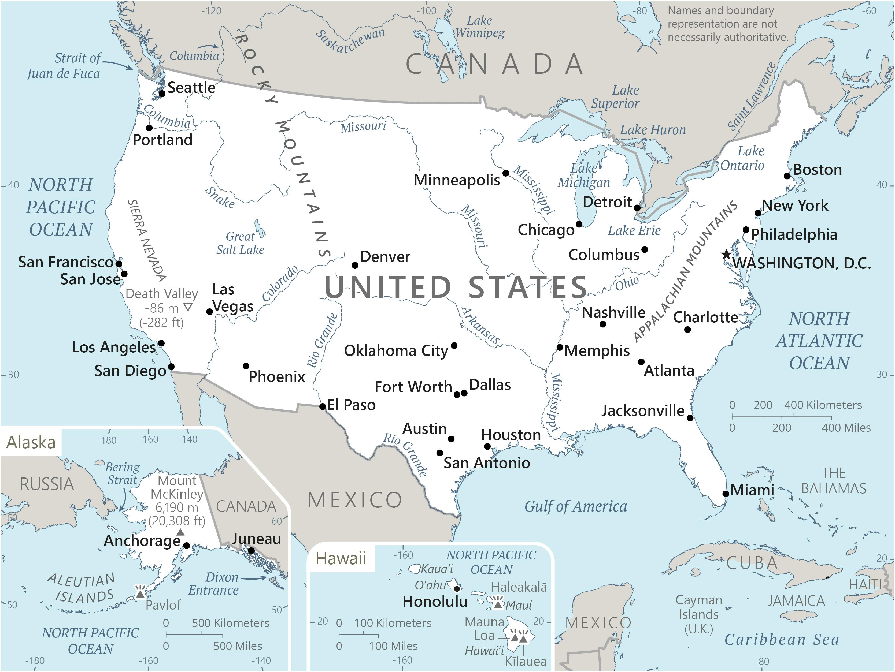

Genel Bilgiler
Amerika Birleşik Devletleri (ABD), Kuzey Amerika kıtasında yer alan federal bir cumhuriyettir. Başkenti Washington, D.C.’dir. Yaklaşık 332 milyon nüfusa sahiptir. Resmî dili yoktur ancak İngilizce yaygın olarak kullanılır. Para birimi Amerikan Doları (USD)’dır. ABD, BM, NATO ve G7 üyesidir ve küresel ekonomi, teknoloji, kültür ve askeri alanda lider ülkelerden biridir.
ABD, kuzeyde Kanada, doğuda Atlas Okyanusu, güneyde Meksika ve Meksika Körfezi, batıda Pasifik Okyanusu ile çevrilidir. Yüzölçümü yaklaşık 9.525.067 km²’dir. Ülke coğrafyası büyük ovalar, dağlar, göller ve nehirlerden oluşur; Büyük Göller, Mississippi Nehri ve Rocky Dağları öne çıkar.
Başkent: Washington, D.C.
Kıta: Kuzey ve Güney Amerika
Yüzölçümü: 9.833.517 km²
Nüfus (2025): 331.000.000

Bayrak Anlamı: ABD bayrağı kırmızı ve beyaz yatay 13 şerit ile mavi kare içinde 50 beyaz yıldızdan oluşur. 13 şerit, ilk 13 koloniyi; 50 yıldız ise mevcut eyaletleri simgeler. Kırmızı cesareti ve gücü, beyaz saflığı ve masumiyeti, mavi ise adalet ve kararlılığı temsil eder. Bayrak 1777 yılında kabul edilmiştir.
Amerika Birleşik Devletleri Haritası
Ekonomi
ABD ekonomisi dünyanın en büyük ekonomisidir ve hizmet, sanayi ve tarım sektörlerine dayanır. Sanayi alanında teknoloji, otomotiv, savunma ve havacılık öne çıkar. Tarımda mısır, soya, buğday ve et üretimi önemlidir. Hizmet sektörü finans, telekomünikasyon, sağlık ve turizm alanlarında liderdir. ABD, inovasyon ve Ar-Ge yatırımlarıyla küresel ekonomik ve teknolojik liderliğini sürdürmektedir.
| Yıl | İhracat (Milyar $) | İthalat (Milyar $) |
|---|---|---|
| 2019 | 1500 | 2500 |
| 2020 | 1400 | 2200 |
| 2021 | 1600 | 2600 |
| 2022 | 1700 | 2800 |
| 2023 | 1750 | 2850 |